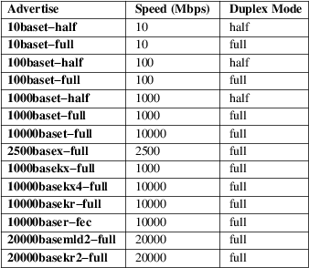

systemd.link − Network device configuration
link.link
A plain ini−style text file that encodes configuration for matching network devices, used by systemd-udevd(8) and in particular its net_setup_link builtin. See systemd.syntax(7) for a general description of the syntax.
The .link files are read from the files located in the system network directory /usr/lib/systemd/network and /usr/local/lib/systemd/network, the volatile runtime network directory /run/systemd/network, and the local administration network directory /etc/systemd/network. All configuration files are collectively sorted and processed in alphanumeric order, regardless of the directories in which they live. However, files with identical filenames replace each other. It is recommended that each filename is prefixed with a number (e.g. 10−eth0.link). Otherwise, the default .link files or those generated by systemd-network-generator.service(8) may take precedence over user configured files. Files in /etc/ have the highest priority, files in /run/ take precedence over files with the same name in /usr/lib/. This can be used to override a system−supplied link file with a local file if needed. As a special case, an empty file (file size 0) or symlink with the same name pointing to /dev/null disables the configuration file entirely (it is "masked").
Along with the link file foo.link, a "drop−in" directory foo.link.d/ may exist. All files with the suffix ".conf" from this directory will be merged in the alphanumeric order and parsed after the main file itself has been parsed. This is useful to alter or add configuration settings, without having to modify the main configuration file. Each drop−in file must have appropriate section headers.
In addition to /etc/systemd/network, drop−in ".d" directories can be placed in /usr/lib/systemd/network or /run/systemd/network directories. Drop−in files in /etc/ take precedence over those in /run/ which in turn take precedence over those in /usr/lib/. Drop−in files under any of these directories take precedence over the main link file wherever located.
The link file contains a [Match] section, which determines if a given link file may be applied to a given device, as well as a [Link] section specifying how the device should be configured. The first (in lexical order) of the link files that matches a given device is applied. Note that a default file 99−default.link is shipped by the system. Any user−supplied .link should hence have a lexically earlier name to be considered at all.
See udevadm(8) for diagnosing problems with .link files.
A link file is said to match an interface if all matches specified by the [Match] section are satisfied. When a link file does not contain valid settings in [Match] section, then the file will match all interfaces and systemd−udevd warns about that. Hint: to avoid the warning and to make it clear that all interfaces shall be matched, add the following:
OriginalName=*
The first (in alphanumeric order) of the link files that matches a given interface is applied, all later files are ignored, even if they match as well. The following keys are accepted:
MACAddress=
A whitespace−separated list of hardware addresses. The acceptable formats are:
colon−delimited hexadecimal
Each field must be one byte. E.g. "12:34:56:78:90:ab" or "AA:BB:CC:DD:EE:FF".
hyphen−delimited hexadecimal
Each field must be one byte. E.g. "12−34−56−78−90−ab" or "AA−BB−CC−DD−EE−FF".
dot−delimited hexadecimal
Each field must be two bytes. E.g. "1234.5678.90ab" or "AABB.CCDD.EEFF".
IPv4 address format
E.g. "127.0.0.1" or "192.168.0.1".
IPv6 address format
E.g. "2001:0db8:85a3::8a2e:0370:7334" or "::1".
The total length of each MAC address must be 4 (for IPv4 tunnel), 6 (for Ethernet), 16 (for IPv6 tunnel), or 20 (for InfiniBand). This option may appear more than once, in which case the lists are merged. If the empty string is assigned to this option, the list of hardware addresses defined prior to this is reset. Defaults to unset.
PermanentMACAddress=
A whitespace−separated list of hardware's permanent addresses. While MACAddress= matches the device's current MAC address, this matches the device's permanent MAC address, which may be different from the current one. Use full colon−, hyphen− or dot−delimited hexadecimal, or IPv4 or IPv6 address format. This option may appear more than once, in which case the lists are merged. If the empty string is assigned to this option, the list of hardware addresses defined prior to this is reset. Defaults to unset.
Path=
A whitespace−separated list of shell−style globs matching the persistent path, as exposed by the udev property ID_PATH.
Driver=
A whitespace−separated list of shell−style globs matching the driver currently bound to the device, as exposed by the udev property ID_NET_DRIVER of its parent device, or if that is not set, the driver as exposed by ethtool −i of the device itself. If the list is prefixed with a "!", the test is inverted.
Type=
A whitespace−separated list of shell−style globs matching the device type, as exposed by networkctl list. If the list is prefixed with a "!", the test is inverted. Some valid values are "ether", "loopback", "wlan", "wwan". Valid types are named either from the udev "DEVTYPE" attribute, or "ARPHRD_" macros in linux/if_arp.h, so this is not comprehensive.
Kind=
A whitespace−separated list of shell−style globs matching the device kind, as exposed by networkctl status INTERFACE or ip −d link show INTERFACE. If the list is prefixed with a "!", the test is inverted. Some valid values are "bond", "bridge", "gre", "tun", "veth". Valid kinds are given by netlink's "IFLA_INFO_KIND" attribute, so this is not comprehensive.
Property=
A whitespace−separated list of udev property names with their values after equals sign ("="). If multiple properties are specified, the test results are ANDed. If the list is prefixed with a "!", the test is inverted. If a value contains white spaces, then please quote whole key and value pair. If a value contains quotation, then please escape the quotation with "\".
Example: if a .link file has the following:
Property=ID_MODEL_ID=9999 "ID_VENDOR_FROM_DATABASE=vendor name" "KEY=with \"quotation\""
then, the .link file matches only when an interface has all the above three properties.
OriginalName=
A whitespace−separated list of shell−style globs matching the device name, as exposed by the udev property "INTERFACE". This cannot be used to match on names that have already been changed from userspace. Caution is advised when matching on kernel−assigned names, as they are known to be unstable between reboots.
Host=
Matches against the hostname or machine ID of the host. See ConditionHost= in systemd.unit(5) for details. When prefixed with an exclamation mark ("!"), the result is negated. If an empty string is assigned, the previously assigned value is cleared.
Virtualization=
Checks whether the system is executed in a virtualized environment and optionally test whether it is a specific implementation. See ConditionVirtualization= in systemd.unit(5) for details. When prefixed with an exclamation mark ("!"), the result is negated. If an empty string is assigned, the previously assigned value is cleared.
KernelCommandLine=
Checks whether a specific kernel command line option is set. See ConditionKernelCommandLine= in systemd.unit(5) for details. When prefixed with an exclamation mark ("!"), the result is negated. If an empty string is assigned, the previously assigned value is cleared.
KernelVersion=
Checks whether the kernel version (as reported by uname −r) matches a certain expression. See ConditionKernelVersion= in systemd.unit(5) for details. When prefixed with an exclamation mark ("!"), the result is negated. If an empty string is assigned, the previously assigned value is cleared.
Credential=
Checks whether the specified credential was passed to the systemd−udevd.service service. See System and Service Credentials [1] for details. When prefixed with an exclamation mark ("!"), the result is negated. If an empty string is assigned, the previously assigned value is cleared.
Architecture=
Checks whether the system is running on a specific architecture. See ConditionArchitecture= in systemd.unit(5) for details. When prefixed with an exclamation mark ("!"), the result is negated. If an empty string is assigned, the previously assigned value is cleared.
Firmware=
Checks whether the system is running on a machine with the specified firmware. See ConditionFirmware= in systemd.unit(5) for details. When prefixed with an exclamation mark ("!"), the result is negated. If an empty string is assigned, the previously assigned value is cleared.
The [Link] section accepts the following keys:
Description=
A description of the device.
Alias=
The ifalias interface property is set to this value.
MACAddressPolicy=
The policy by which the MAC address should be set. The available policies are:
persistent
If the hardware has a persistent MAC address, as most hardware should, and if it is used by the kernel, nothing is done. Otherwise, a new MAC address is generated which is guaranteed to be the same on every boot for the given machine and the given device, but which is otherwise random. This feature depends on ID_NET_NAME_* properties to exist for the link. On hardware where these properties are not set, the generation of a persistent MAC address will fail.
random
If the kernel is using a random MAC address, nothing is done. Otherwise, a new address is randomly generated each time the device appears, typically at boot. Either way, the random address will have the "unicast" and "locally administered" bits set.
none
Keeps the MAC address assigned by the kernel. Or use the MAC address specified in MACAddress=.
An empty string assignment is equivalent to setting "none".
MACAddress=
The interface MAC address to use. For this setting to take effect, MACAddressPolicy= must either be unset, empty, or "none".
NamePolicy=
An ordered, space−separated list of policies by which the interface name should be set. NamePolicy= may be disabled by specifying net.ifnames=0 on the kernel command line. Each of the policies may fail, and the first successful one is used. The name is not set directly, but is exported to udev as the property ID_NET_NAME, which is, by default, used by a udev(7), rule to set NAME. The available policies are:
kernel
If the kernel claims that the name it has set for a device is predictable, then no renaming is performed.
database
The name is set based on entries in the udev's Hardware Database with the key ID_NET_NAME_FROM_DATABASE.
onboard
The name is set based on information given by the firmware for on−board devices, as exported by the udev property ID_NET_NAME_ONBOARD. See systemd.net-naming-scheme(7).
slot
The name is set based on information given by the firmware for hot−plug devices, as exported by the udev property ID_NET_NAME_SLOT. See systemd.net-naming-scheme(7).
path
The name is set based on the device's physical location, as exported by the udev property ID_NET_NAME_PATH. See systemd.net-naming-scheme(7).
mac
The name is set based on the device's persistent MAC address, as exported by the udev property ID_NET_NAME_MAC. See systemd.net-naming-scheme(7).
keep
If the device already had a name given by userspace (as part of creation of the device or a rename), keep it.
Name=
The interface name to use. This option has lower precedence than NamePolicy=, so for this setting to take effect, NamePolicy= must either be unset, empty, disabled, or all policies configured there must fail. Also see the example below with "Name=dmz0".
Note that specifying a name that the kernel might use for another interface (for example "eth0") is dangerous because the name assignment done by udev will race with the assignment done by the kernel, and only one interface may use the name. Depending on the order of operations, either udev or the kernel will win, making the naming unpredictable. It is best to use some different prefix, for example "internal0"/"external0" or "lan0"/"lan1"/"lan3".
Interface names must have a minimum length of 1 character and a maximum length of 15 characters, and may contain any 7bit ASCII character, with the exception of control characters, ":", "/" and "%". While "." is an allowed character, it's recommended to avoid it when naming interfaces as various tools (such as resolvconf(1)) use it as separator character. Also, fully numeric interface names are not allowed (in order to avoid ambiguity with interface specification by numeric indexes), as are the special strings ".", "..", "all" and "default".
AlternativeNamesPolicy=
A space−separated list of policies by which the interface's alternative names should be set. Each of the policies may fail, and all successful policies are used. The available policies are "database", "onboard", "slot", "path", and "mac". If the kernel does not support the alternative names, then this setting will be ignored.
AlternativeName=
The alternative interface name to use. This option can be specified multiple times. If the empty string is assigned to this option, the list is reset, and all prior assignments have no effect. If the kernel does not support the alternative names, then this setting will be ignored.
Alternative interface names may be used to identify interfaces in various tools. In contrast to the primary name (as configured with Name= above) there may be multiple alternative names referring to the same interface. Alternative names may have a maximum length of 127 characters, in contrast to the 15 allowed for the primary interface name, but otherwise are subject to the same naming constraints.
TransmitQueues=
Specifies the device's number of transmit queues. An integer in the range 1...4096. When unset, the kernel's default will be used.
ReceiveQueues=
Specifies the device's number of receive queues. An integer in the range 1...4096. When unset, the kernel's default will be used.
TransmitQueueLength=
Specifies the transmit queue length of the device in number of packets. An unsigned integer in the range 0...4294967294. When unset, the kernel's default will be used.
MTUBytes=
The maximum transmission unit in bytes to set for the device. The usual suffixes K, M, G are supported and are understood to the base of 1024.
BitsPerSecond=
The speed to set for the device, the value is rounded down to the nearest Mbps. The usual suffixes K, M, G are supported and are understood to the base of 1000.
Duplex=
The duplex mode to set for the device. The accepted values are half and full.
AutoNegotiation=
Takes a boolean. If set to yes, automatic negotiation of transmission parameters is enabled. Autonegotiation is a procedure by which two connected ethernet devices choose common transmission parameters, such as speed, duplex mode, and flow control. When unset, the kernel's default will be used.
Note that if autonegotiation is enabled, speed and duplex settings are read−only. If autonegotiation is disabled, speed and duplex settings are writable if the driver supports multiple link modes.
WakeOnLan=
The Wake−on−LAN policy to set for the device. Takes the special value "off" which disables Wake−on−LAN, or space separated list of the following words:
phy
Wake on PHY activity.
unicast
Wake on unicast messages.
multicast
Wake on multicast messages.
broadcast
Wake on broadcast messages.
arp
Wake on ARP.
magic
Wake on receipt of a magic packet.
secureon
Enable SecureOn password for MagicPacket. Implied when WakeOnLanPassword= is specified. If specified without WakeOnLanPassword= option, then the password is read from the credential "LINK.link.wol.password" (e.g., "60−foo.link.wol.password"), and if the credential not found, then read from "wol.password". See LoadCredential=/SetCredential= in systemd.exec(1) for details. The password in the credential, must be 6 bytes in hex format with each byte separated by a colon (":") like an Ethernet MAC address, e.g., "aa:bb:cc:dd:ee:ff".
Defaults to unset, and the device's default will be used. This setting can be specified multiple times. If an empty string is assigned, then the all previous assignments are cleared.
WakeOnLanPassword=
Specifies the SecureOn password for MagicPacket. Takes an absolute path to a regular file or an AF_UNIX stream socket, or the plain password. When a path to a regular file is specified, the password is read from it. When an AF_UNIX stream socket is specified, a connection is made to it and the password is read from it. The password must be 6 bytes in hex format with each byte separated by a colon (":") like an Ethernet MAC address, e.g., "aa:bb:cc:dd:ee:ff". This implies WakeOnLan=secureon. Defaults to unset, and the current value will not be changed.
Port=
The port option is used to select the device port. The supported values are:
tp
An Ethernet interface using Twisted−Pair cable as the medium.
aui
Attachment Unit Interface (AUI). Normally used with hubs.
bnc
An Ethernet interface using BNC connectors and co−axial cable.
mii
An Ethernet interface using a Media Independent Interface (MII).
fibre
An Ethernet interface using Optical Fibre as the medium.
Advertise=
This sets what speeds and duplex modes of operation are advertised for auto−negotiation. This implies "AutoNegotiation=yes". The supported values are:
Table 1. Supported advertise values

By default this is unset, i.e. all possible modes will be advertised. This option may be specified more than once, in which case all specified speeds and modes are advertised. If the empty string is assigned to this option, the list is reset, and all prior assignments have no effect.
ReceiveChecksumOffload=
Takes a boolean. If set to true, hardware offload for checksumming of ingress network packets is enabled. When unset, the kernel's default will be used.
TransmitChecksumOffload=
Takes a boolean. If set to true, hardware offload for checksumming of egress network packets is enabled. When unset, the kernel's default will be used.
TCPSegmentationOffload=
Takes a boolean. If set to true, TCP Segmentation Offload (TSO) is enabled. When unset, the kernel's default will be used.
TCP6SegmentationOffload=
Takes a boolean. If set to true, TCP6 Segmentation Offload (tx−tcp6−segmentation) is enabled. When unset, the kernel's default will be used.
GenericSegmentationOffload=
Takes a boolean. If set to true, Generic Segmentation Offload (GSO) is enabled. When unset, the kernel's default will be used.
GenericReceiveOffload=
Takes a boolean. If set to true, Generic Receive Offload (GRO) is enabled. When unset, the kernel's default will be used.
GenericReceiveOffloadHardware=
Takes a boolean. If set to true, hardware accelerated Generic Receive Offload (GRO) is enabled. When unset, the kernel's default will be used.
LargeReceiveOffload=
Takes a boolean. If set to true, Large Receive Offload (LRO) is enabled. When unset, the kernel's default will be used.
ReceiveVLANCTAGHardwareAcceleration=
Takes a boolean. If set to true, receive VLAN CTAG hardware acceleration is enabled. When unset, the kernel's default will be used.
TransmitVLANCTAGHardwareAcceleration=
Takes a boolean. If set to true, transmit VLAN CTAG hardware acceleration is enabled. When unset, the kernel's default will be used.
ReceiveVLANCTAGFilter=
Takes a boolean. If set to true, receive filtering on VLAN CTAGs is enabled. When unset, the kernel's default will be used.
TransmitVLANSTAGHardwareAcceleration=
Takes a boolean. If set to true, transmit VLAN STAG hardware acceleration is enabled. When unset, the kernel's default will be used.
NTupleFilter=
Takes a boolean. If set to true, receive N−tuple filters and actions are enabled. When unset, the kernel's default will be used.
RxChannels=, TxChannels=, OtherChannels=, CombinedChannels=
Specifies the number of receive, transmit, other, or combined channels, respectively. Takes an unsigned integer in the range 1...4294967295 or "max". If set to "max", the advertised maximum value of the hardware will be used. When unset, the number will not be changed. Defaults to unset.
RxBufferSize=, RxMiniBufferSize=, RxJumboBufferSize=, TxBufferSize=
Specifies the maximum number of pending packets in the NIC receive buffer, mini receive buffer, jumbo receive buffer, or transmit buffer, respectively. Takes an unsigned integer in the range 1...4294967295 or "max". If set to "max", the advertised maximum value of the hardware will be used. When unset, the number will not be changed. Defaults to unset.
RxFlowControl=
Takes a boolean. When set, enables receive flow control, also known as the ethernet receive PAUSE message (generate and send ethernet PAUSE frames). When unset, the kernel's default will be used.
TxFlowControl=
Takes a boolean. When set, enables transmit flow control, also known as the ethernet transmit PAUSE message (respond to received ethernet PAUSE frames). When unset, the kernel's default will be used.
AutoNegotiationFlowControl=
Takes a boolean. When set, auto negotiation enables the interface to exchange state advertisements with the connected peer so that the two devices can agree on the ethernet PAUSE configuration. When unset, the kernel's default will be used.
GenericSegmentOffloadMaxBytes=
Specifies the maximum size of a Generic Segment Offload (GSO) packet the device should accept. The usual suffixes K, M, G are supported and are understood to the base of 1024. An unsigned integer in the range 1...65536. Defaults to unset.
GenericSegmentOffloadMaxSegments=
Specifies the maximum number of Generic Segment Offload (GSO) segments the device should accept. An unsigned integer in the range 1...65535. Defaults to unset.
UseAdaptiveRxCoalesce=, UseAdaptiveTxCoalesce=
Boolean properties that, when set, enable/disable adaptive Rx/Tx coalescing if the hardware supports it. When unset, the kernel's default will be used.
RxCoalesceSec=, RxCoalesceIrqSec=, RxCoalesceLowSec=, RxCoalesceHighSec=, TxCoalesceSec=, TxCoalesceIrqSec=, TxCoalesceLowSec=, TxCoalesceHighSec=
These properties configure the delay before Rx/Tx interrupts are generated after a packet is sent/received. The "Irq" properties come into effect when the host is servicing an IRQ. The "Low" and "High" properties come into effect when the packet rate drops below the low packet rate threshold or exceeds the high packet rate threshold respectively if adaptive Rx/Tx coalescing is enabled. When unset, the kernel's defaults will be used.
RxMaxCoalescedFrames=, RxMaxCoalescedIrqFrames=, RxMaxCoalescedLowFrames=, RxMaxCoalescedHighFrames=, TxMaxCoalescedFrames=, TxMaxCoalescedIrqFrames=, TxMaxCoalescedLowFrames=, TxMaxCoalescedHighFrames=
These properties configure the maximum number of frames that are sent/received before a Rx/Tx interrupt is generated. The "Irq" properties come into effect when the host is servicing an IRQ. The "Low" and "High" properties come into effect when the packet rate drops below the low packet rate threshold or exceeds the high packet rate threshold respectively if adaptive Rx/Tx coalescing is enabled. When unset, the kernel's defaults will be used.
CoalescePacketRateLow=, CoalescePacketRateHigh=
These properties configure the low and high packet rate (expressed in packets per second) threshold respectively and are used to determine when the corresponding coalescing settings for low and high packet rates come into effect if adaptive Rx/Tx coalescing is enabled. If unset, the kernel's defaults will be used.
CoalescePacketRateSampleIntervalSec=
Configures how often to sample the packet rate used for adaptive Rx/Tx coalescing. This property cannot be zero. This lowest time granularity supported by this property is seconds. Partial seconds will be rounded up before being passed to the kernel. If unset, the kernel's default will be used.
StatisticsBlockCoalesceSec=
How long to delay driver in−memory statistics block updates. If the driver does not have an in−memory statistic block, this property is ignored. This property cannot be zero. If unset, the kernel's default will be used.
MDI=
Specifies the medium dependent interface (MDI) mode for the interface. A MDI describes the interface from a physical layer implementation to the physical medium used to carry the transmission. Takes one of the following words: "straight" (or equivalently: "mdi"), "crossover" (or equivalently: "mdi−x", "mdix"), and "auto". When "straight", the MDI straight through mode will be used. When "crossover", the MDI crossover (MDI−X) mode will be used. When "auto", the MDI status is automatically detected. Defaults to unset, and the kernel's default will be used.
SR−IOVVirtualFunctions=
Specifies the number of SR−IOV virtual functions. Takes an integer in the range 0...2147483647. Defaults to unset, and automatically determined from the values specified in the VirtualFunction= settings in the [SR−IOV] sections.
The [SR−IOV] section accepts the following keys. Specify several [SR−IOV] sections to configure several SR−IOVs. SR−IOV provides the ability to partition a single physical PCI resource into virtual PCI functions which can then be injected into a VM. In the case of network VFs, SR−IOV improves north−south network performance (that is, traffic with endpoints outside the host machine) by allowing traffic to bypass the host machine’s network stack.
VirtualFunction=
Specifies a Virtual Function (VF), lightweight PCIe function designed solely to move data in and out. Takes an integer in the range 0...2147483646. This option is compulsory.
VLANId=
Specifies VLAN ID of the virtual function. Takes an integer in the range 1...4095.
QualityOfService=
Specifies quality of service of the virtual function. Takes an integer in the range 1...4294967294.
VLANProtocol=
Specifies VLAN protocol of the virtual function. Takes "802.1Q" or "802.1ad".
MACSpoofCheck=
Takes a boolean. Controls the MAC spoof checking. When unset, the kernel's default will be used.
QueryReceiveSideScaling=
Takes a boolean. Toggle the ability of querying the receive side scaling (RSS) configuration of the virtual function (VF). The VF RSS information like RSS hash key may be considered sensitive on some devices where this information is shared between VF and the physical function (PF). When unset, the kernel's default will be used.
Trust=
Takes a boolean. Allows one to set trust mode of the virtual function (VF). When set, VF users can set a specific feature which may impact security and/or performance. When unset, the kernel's default will be used.
LinkState=
Allows one to set the link state of the virtual function (VF). Takes a boolean or a special value "auto". Setting to "auto" means a reflection of the physical function (PF) link state, "yes" lets the VF to communicate with other VFs on this host even if the PF link state is down, "no" causes the hardware to drop any packets sent by the VF. When unset, the kernel's default will be used.
MACAddress=
Specifies the MAC address for the virtual function.
Example 1. /usr/lib/systemd/network/99−default.link
The link file 99−default.link that is shipped with systemd defines the default naming policy for links.
[Link]
NamePolicy=kernel database on−board slot path
MACAddressPolicy=persistent
Example 2. /etc/systemd/network/10−dmz.link
This example assigns the fixed name "dmz0" to the interface with the MAC address 00:a0:de:63:7a:e6:
[Match]
MACAddress=00:a0:de:63:7a:e6
[Link]
Name=dmz0
NamePolicy= is not set, so Name= takes effect. We use the "10−" prefix to order this file early in the list. Note that it needs to be before "99−link", i.e. it needs a numerical prefix, to have any effect at all.
Example 3. Debugging NamePolicy= assignments
$
sudo SYSTEMD_LOG_LEVEL=debug udevadm test−builtin
net_setup_link /sys/class/net/hub0
...
Parsed configuration file
/usr/lib/systemd/network/99−default.link
Parsed configuration file
/etc/systemd/network/10−eth0.link
ID_NET_DRIVER=cdc_ether
Config file /etc/systemd/network/10−eth0.link applies
to device hub0
link_config: autonegotiation is unset or enabled, the speed
and duplex are not writable.
hub0: Device has name_assign_type=4
Using default interface naming scheme 'v240'.
hub0: Policies didn't yield a name, using specified
Name=hub0.
ID_NET_LINK_FILE=/etc/systemd/network/10−eth0.link
ID_NET_NAME=hub0
...
Explicit Name= configuration wins in this case.
sudo
SYSTEMD_LOG_LEVEL=debug udevadm test−builtin
net_setup_link /sys/class/net/enp0s31f6
...
Parsed configuration file
/usr/lib/systemd/network/99−default.link
Parsed configuration file
/etc/systemd/network/10−eth0.link
Created link configuration context.
ID_NET_DRIVER=e1000e
Config file /usr/lib/systemd/network/99−default.link
applies to device enp0s31f6
link_config: autonegotiation is unset or enabled, the speed
and duplex are not writable.
enp0s31f6: Device has name_assign_type=4
Using default interface naming scheme 'v240'.
enp0s31f6: Policy *keep*: keeping existing userspace name
enp0s31f6: Device has addr_assign_type=0
enp0s31f6: MAC on the device already matches policy
*persistent*
ID_NET_LINK_FILE=/usr/lib/systemd/network/99−default.link
...
In this case, the interface was already renamed, so the keep policy specified as the first option in 99−default.link means that the existing name is preserved. If keep was removed, or if were in boot before the renaming has happened, we might get the following instead:
enp0s31f6:
Policy *path* yields "enp0s31f6".
enp0s31f6: Device has addr_assign_type=0
enp0s31f6: MAC on the device already matches policy
*persistent*
ID_NET_LINK_FILE=/usr/lib/systemd/network/99−default.link
ID_NET_NAME=enp0s31f6
...
Please note that the details of output are subject to change.
Example 4. /etc/systemd/network/10−internet.link
This example assigns the fixed name "internet0" to the interface with the device path "pci−0000:00:1a.0−*":
[Match]
Path=pci−0000:00:1a.0−*
[Link]
Name=internet0
Example 5. /etc/systemd/network/25−wireless.link
Here's an overly complex example that shows the use of a large number of [Match] and [Link] settings.
[Match]
MACAddress=12:34:56:78:9a:bc
Driver=brcmsmac
Path=pci−0000:02:00.0−*
Type=wlan
Virtualization=no
Host=my−laptop
Architecture=x86−64
[Link]
Name=wireless0
MTUBytes=1450
BitsPerSecond=10M
WakeOnLan=magic
MACAddress=cb:a9:87:65:43:21
systemd-udevd.service(8), udevadm(8), systemd.netdev(5), systemd.network(5), systemd-network-generator.service(8)
|
1. |
System and Service Credentials |
https://systemd.io/CREDENTIALS